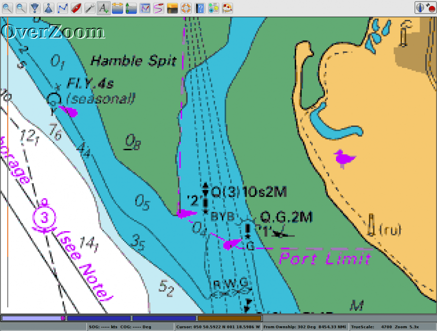
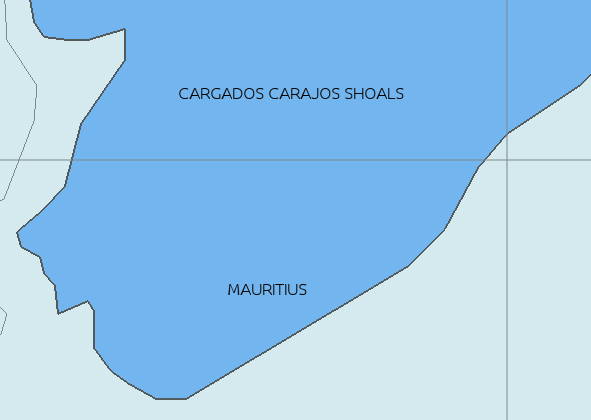

It is essential to understand what happens when both zooming in and zooming out in a chart view. Vector charts have their own issues, with both over- and under-zooming. Both can be potentially dangerous, and it's essential to understand what's going on.
Zooming in makes the chart scale larger while zooming out makes the scale smaller
These buttons allow you to zoom in and out on the chart currently being displayed.
Will zoom the chart in for more detail, larger scale.
Will zoom the chart view out for more area, smaller scale.
Alternatively, the + and - keys on your keyboard will zoom in and out. If you have a mouse with a scroll wheel, it can also be used to quickly zoom in and out.
Other alternatives for zooming includes:
For zooming in smaller steps try
Some settings for zooming are available in the Options→Display→General tab. Read more about “Smooth Panning/Zooming” and “Zoom to Cursor” in Options Setting. Note that

Overzooming a raster chart.
Overzooming a vector chart.
If you zoom in enough there will appear a warning “OverZoom” in the upper left part of the chart area. This means that you have zoomed in way to far, and are using the chart at a scale that was never intended, and that is not supported by the original survey. No new information will be seen, and the situation is potentially dangerous as it could give the impression of increased distance between dangers. On a raster-chart pixelation will be seen, but on a vector chart it is not so obvious when you have over zoomed. This is where the warning is useful.
Your first action when the warning appears should be to zoom out at least one snap. Charts are generally based on surveys in twice the scale of the released chart, so when zooming in beyond a factor of 2, there is no support, increased details etc, in the underlying survey. OpenCPN warns for “OverZoom” when zooming with a factor of 4 or more.
Overzooming settings are explained in Options Setting. In short OpenCPN, by default, blurs vector-charts and expands the text and lines to imitate what happens with raster charts when zooming in beyond a factor 10.0 x.
Unlimited zooming is available using the background Map. Just create an empty chartgroup and switch to this map at any time. More in Chart Groups Tab.
Underzooming is only a general problem with CM93 V2, in OpenCPN. The reason is the very poor graphical representation in small scale charts, of reefs, small islands and other dangers. The case with the Cargados Carajos Shoals in Indian Ocean is well known since Team Vestas grounding in the 2014/2015 Volvo Ocean Race.
This is what you see. All pictures are in a scale of approximately 1:650.000. In the normal view, no indication at all appears of islands or reefs, even though the name in itself indicates, to a seasoned navigator, that more information should be sought elsewhere. Look upon a blue area as a warning sign. Zoom in to see if more deatails are available. If no more details show up, even using a large scale view, it indicates that the CM93 coverage is poor in the area. Once again, use alternative sources.

Switching to single mode view, and with chart outlines active, OpenCPN shows that a larger scale chart is available. This will show on zooming in further. The available chart does not cover the southern end of the reef where Vestas ran aground. In some editions of CM93 more charts of the area are available, including the southern part.
Compare this to the well thought out representation in the raster chart INT 702 in scale 1:3.500.000.
It all starts with passage planning. The bottom line is: Don't trust CM93. Always check with other reliable sources, meaning, for example, raster charts, paper charts, Pilot Books, or ENC charts, not another privately issued vector chart, with similar problems (for example Navionics).
Doing the best you can with OpenCPN and only CM93 available.
For passages including small scale CM93 charts (A or Z scale): Create a route that you plan to follow. Switch to single chart mode. (Shortcut key “Q”.) Activate chart outlines. (Shortcut key “O”.) “Fly” along the route, making sure you are zoomed in to a factor of at least 2.5 x. Available charts should now be outlined in magenta. Drop suitable marks documenting these charts, and the dangers they represent, for later reference.
Nigel Calder: “How to read a Nautical Chart, Second ed. 2012” is recommended to all users who want to know more about charts, the surveys they are based on, and their horizontal and vertical accuracy.